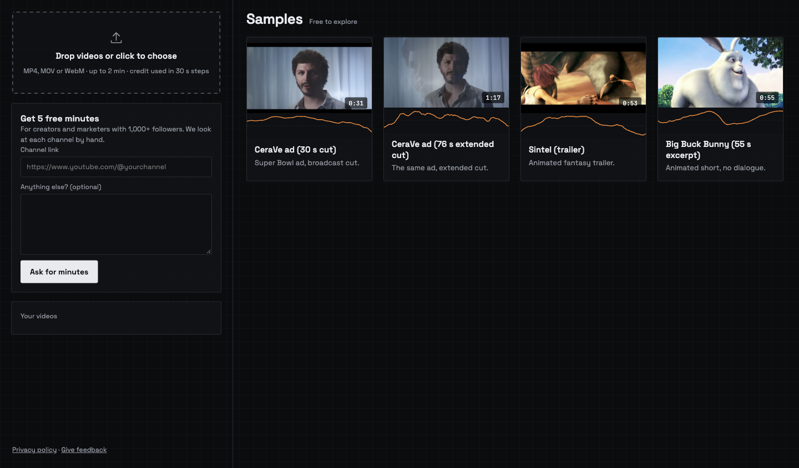
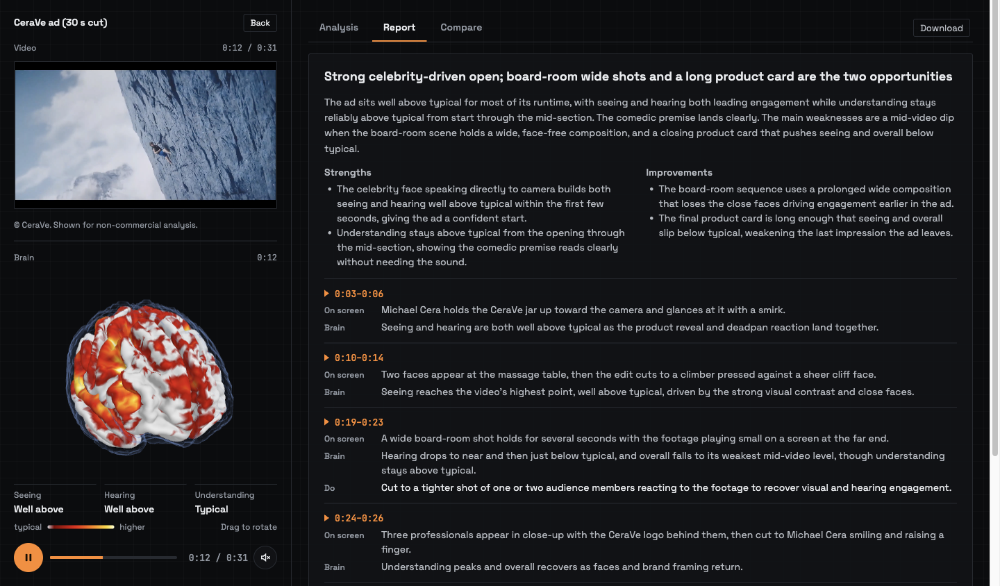
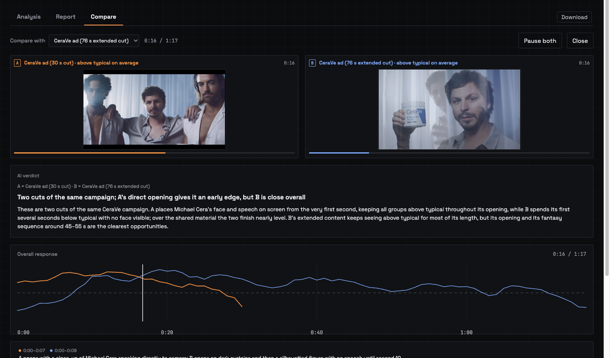

NeuroLens
Predicted brain response to video, second by second
CS5224 Cloud Computing · Final presentation · [team names]
to test one ad on a brain scanner
Cost to evaluate one video. fMRI vs surveys: Venkatraman et al., 2015. Competitor ranges: our preliminary report. NeuroLens: planned price per 30 s clip.
Ten cuts by lunch.
No way to judge them.
Generative tools made production cheap. The feed made every second count.
One upload in.
A brain response out.
For every second of the video. A virtual pre-test of a typical viewer, not a prediction of views or sales.
Two people, two questions.
A short-form creator uploads two edits of an intro, finds the dip, and re-cuts.
A small agency uploads up to five cuts, compares any pair, and decides with evidence.
Seven brain areas.
Three questions.
Seeing
faces · bodies · scenes · visual
Hearing
sound
Understanding
speech · social
From file to insight in five steps.
MP4, MOV, WebM · up to 2 minutes · credit used in 30 s steps

- 1Sign in with Google
- 2The price shows before you confirm
- 3Stages tick: check, queue, analyse

- 1Follow the playhead
- 2Peak near 0:06, dip at the end
- 3Seeing · hearing · understanding
- 4Toggle: without sound


- 1Upload a text file renamed .mp4
- 2It is rejected within seconds
- 3No credit is charged
We pay for GPU minutes
only when someone is waiting.
Check first
Size, length and price are verified before any GPU wakes.
Scale to zero
Off after 7 idle minutes. A guard stops a stuck GPU.
Refund by default
A failed job returns its credit automatically.
Free today. Paid tomorrow.
Today · research
Free to use
The model is CC BY-NC, so we can't sell it. Creators with 1,000+ followers get 5 free minutes.
Next · commercial
Pay per analysis
Prepaid credits, per video-second, once we hold a commercial licence. A Stripe version is built and tested.
Creators share a retention curve → earn the analysis back → we get ground truth for the model.
What one analysis costs us.
planned price per 30 s video
Preliminary estimate (report §2): ≈ $0.008 raw GPU, ≈ $0.10 fully loaded, ≈ 89% margin. Measured numbers from Experiment 3 replace these.
Cloud wins below about 1,500 videos a month.
What it claims, and what it doesn't.
What it is
- A typical viewer's predicted brain response
- One scale for every video
- A virtual pre-test for editing
What it isn't
- A prediction of views or sales
- Emotion classification
- Cleared for commercial use
- Statistically proven (n = 5)
Where does the time go in one job?
Every job split into its stages, for 15, 30 and 60 s clips.
GPU-seconds per video-second: [TBD] · cold start: [TBD] · local RTX 4090 baseline ≈ 5
Twenty people at once.
Bursts of 1, 5, 10 and 20 simultaneous uploads, with the GPU warm and cold.
By design no job is dropped. A GPU failure refunds the job at once.
Can people use it?
Five student creators. One task: upload an ad, find one peak and one drop-off.
SUS score · 68 is average · 80 is an A
completed unaided, of 5 · median time on task [TBD]
A $10,000 brain study,
in minutes.
Live today: sign-in, upload, prediction, 3D brain, AI report, comparison, refunds.
Thank you.
Questions?
djlh10wxwg1q9.cloudfront.net
Code · github.com/kelvinlowhm86/neurolens
Recorded demo
[Embed the recorded demo of slides 8–11 here]